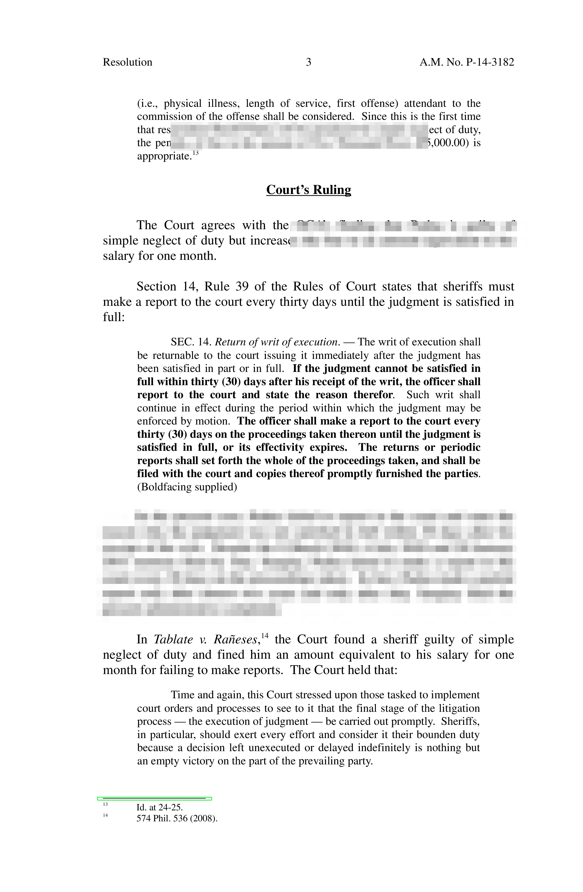
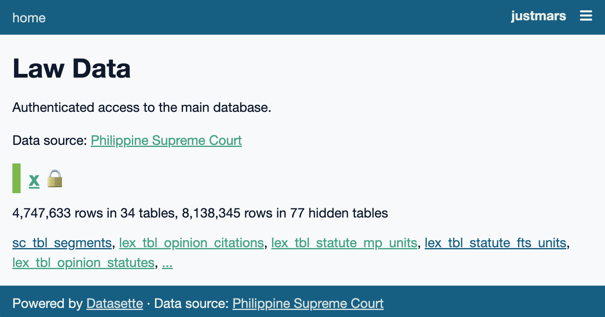
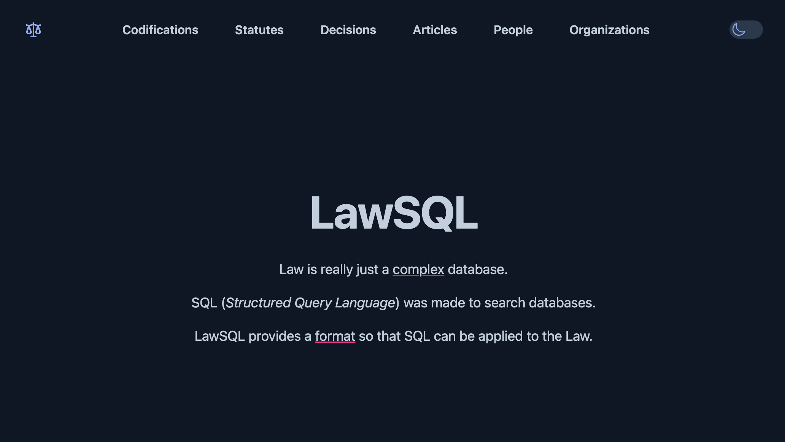

Home
Hi, I'm Mars and this is an attempt at a blog.
The last time I tried a personal blog was the dawn of the internet. Google was a startup, Geocities was still alive, and Dreamweaver was a thing.
I started to code again in 2019ish, sometime after law school. This is an attempt to record notes and things I've learned, in the futile hope that I don't forget them.
I've documented some of the work done this last year into a format that hopefully can be understood by the general public.
corpus-unpdf
Extract SC-issued decision PDFs into contextualized lines:
| Spotting the footnote area using a green box | Convert image as preparatory step in page analysis |
|---|---|
|  |
citation-utils
Extract citations of Philippine Supreme Court decisions from text.
>>> text = """<em>Gatchalian Promotions Talent Pool, Inc. v. Atty. Naldoza</em>,
374 Phil 1, 10-11 (1999), citing: <em>In re Almacen</em>,
31 SCRA 562, 600 (1970).; People v. Umayam, G.R. No. 147033, April 30, 2003;
<i>Bagong Alyansang Makabayan v. Zamora,</i> G.R. Nos. 138570, 138572,
138587, 138680, 138698, October 10, 2000, 342 SCRA 449; Villegas <em>v.</em>
Subido, G.R. No. 31711, Sept. 30, 1971, 41 SCRA 190;"""
>>> [c.dict(exclude_none=True) for c in Citation.extract_citations(text)]
[
{'docket_category': 'GR', 'docket_serial': '147033', 'docket_date': datetime.date(2003, 4, 30), 'docket': 'GR 147033, Apr. 30, 2003'},
{'docket_category': 'GR', 'docket_serial': '138570', 'docket_date': datetime.date(2000, 10, 10), 'docket': 'GR 138570, Oct. 10, 2000', 'scra': '342 SCRA 449'},
{'docket_category': 'GR', 'docket_serial': '31711', 'docket_date': datetime.date(1971, 9, 30), 'docket': 'GR 31711, Sep. 30, 1971', 'scra': '41 SCRA 190'},
{'scra': '31 SCRA 562'},
{'phil': '374 Phil 1'}
]
statute-trees
Detect titles of Philippine statutes when found in text.
# imagine messy legalese with citations
>>> text = """
A.M. No. 02-11-10-SC or the Rules on Declaration of Absolute;
Administrative Order No. 3 by enacting A.M. No. 99-10-05-0;
Parenthetically, under these statutes [referring to RA Nos. 965 and 2630]
Commonwealth Act (C.A.) No. 613, otherwise known as
the <em>Philippine Immigration Act of 1940</em>; see also
Republic Act No. 386
"""
>>> from statute_patterns import extract_rules
>>> list(extract_rules(text))
[Rule(cat='rule_am', id='02-11-10-sc'),
Rule(cat='rule_am', id='99-10-05-0'),
Rule(cat='ra', id='965'),
Rule(cat='ra', id='2630'),
Rule(cat='ca', id='613'),
Rule(cat='ra', id='386')]
Create nested representations of Philippine statutes, codified statutes, and general legal documents.
>>>r = Rule(cat='ra', id='386') # assign the Rule to `r`
>>>r(<path/to/statutes>) # get the base path to `/statutes`
StatuteDetails(
created=1665225124.0644598,
modified=1665225124.0644598,
rule=Rule(cat='ra', id='386'),
title='Republic Act No. 386',
description='An Act to Ordain and Institute the Civil Code of the Philippines',
id='ra-386-june-18-1949',
emails=['maria@abcxyz.law', 'fernando@abcxyz.law'],
date=datetime.date(1949, 6, 18),
variant=1,
units=[
{
'item': 'Container 1',
'caption': 'Preliminary Title',
'units': [
{
'item': 'Chapter 1',
'caption': 'Effect and Application of Laws',
'units': [
{
'item': 'Article 1',
'content': 'This Act shall be known as the "Civil Code of the Philippines." (n)\n'
},
{
'item': 'Article 2',
'content': 'Laws shall take effect after fifteen days following the completion of their publication either in the Official Gazette or in a newspaper of general circulation in the Philippines, unless it is otherwise provided. (1a)\n'
},
...
]
},
...
]
},
...
],
titles=[
StatuteTitle(
statute_id='ra-386-june-18-1949',
category='alias',
text='New Civil Code'
),
StatuteTitle(
statute_id='ra-386-june-18-1949',
category='alias',
text='Civil Code of 1950'
),
StatuteTitle(
statute_id='ra-386-june-18-1949',
category='official',
text='An Act to Ordain and Institute the Civil Code of the Philippines'
),
StatuteTitle(
statute_id='ra-386-june-18-1949',
category='serial',
text='Republic Act No. 386'
)
]
)
sqlpyd
Use sqlite-utils attributes in pydantic models. The models are the schema for content outputted from citation-utils and statute-trees:
# TableConfig is a wrapper around `pydantic.BaseModel`
# `col`, `fts`, and `index` attributes utilize sqlite-utils functions
class RegularName(TableConfig):
full_name: str | None = Field(None, col=str, fts=True, index=True)
first_name: str = Field(..., max_length=50, col=str, fts=True)
last_name: str = Field(..., max_length=50, col=str, fts=True, index=True)
suffix: Suffix | None = Field(None, max_length=4, col=str)
class Config:
use_enum_values = True
corpus-x
corpus-x, made with sqlpyd models, generates a sqlite database of Philippine legal content:
flowchart LR
corpus_pax--api--->x
corpus_base--copy--->x
op_stat(statutes in opinions)<--after prerequisites-->x
op_cite(citations in opinions)<--after prerequisites-->x
statutes--create trees-->x
codifications--create trees-->x
x(corpus-x)-->db[(sqlite.db)]lawData
corpus-x can be queried via lawData, a Datasette instance:

lawSQL
While lawData content can be accessed via third-party API calls, it's interface isn't intended for public consumption.
To make the UI more palatable, we need a more UI-driven site. Hence, lawSQL (built with Django, styled with TailwindCSS).
